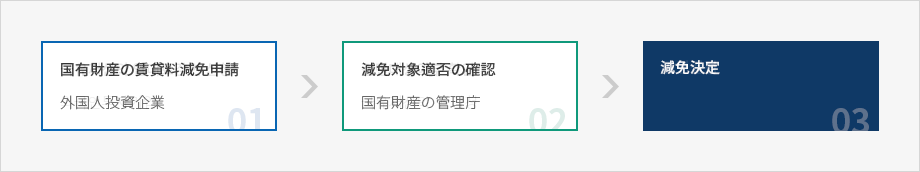
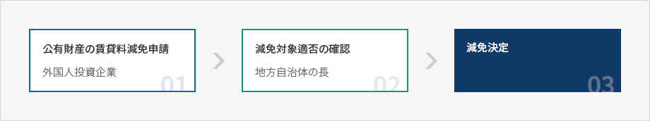

その他支援
- Home
- 投資ガイド
- 投資インセンティブ
- その他支援
国·公有財産の賃貸及び賃貸料の減免
国家及び地方自治体所有の土地、工場、その他の国·公有財産は、随意契約により外国人投資企業が使用し収益を上げたり、外国人投資企業に対して賃貸、売却する事が出来ます。賃貸期間は50年までの範囲内で可能となり、賃貸期間終了時に50年の範囲内で賃貸期間を更新したり、国家、地方自治体に寄付又は原状回復を条件に、賃貸した土地に工場等の永久施設物を築造する事が出来ます。
国有財産の賃貸時、外国人投資地域や産業立地及び開発に関する法律に基づく国家·地方·都市先端産業団地及び農工団地にある土地等は、対象によって50～100%まで一定の手続きを経て賃貸料の減免が出来、公有財産の賃貸時には地方自治体の条例により賃貸料の減免を受ける事が出来ます。
国有財産賃貸料の減免比率及び対象
| 減免比率 | 減免対象 |
|---|---|
| 100%減免 |
|
| 75%減免 |
|
| 50%減免 |
|
賃貸料減免の申請手続き
国有財産の賃貸減免申請


- 국유재산의 임대료감면 신청 - 외국인투자기업
- 감면대상여부 확인 - 국유재산의 관리청
- 감면결정

公有財産の賃貸料減免の申請

- 공유재산의 임대료감면 신청 - 외국인투자기업
- 감면대상여부 확인 - 지방자치단체의 장
- 감면결정

提出書類
- 施設の運営者である事を証明する書類又は賃貸料の減免対象になる事業である事を証明する書類写し
- 土地等に関する賃貸借契約書写し
土地等の売却において買入代金の一括納付が困難であると認められる場合、納付期日を延期したり分割で納付する事が出来ます(適用利率4％以内)。国有財産は1年の範囲内で納付期日を延期したり、20年の範囲内で分割納付する事が出来、公有財産は条例で定めるところにより納付期日を延期又は分割納付する事が出来ます。
プロジェクトマネージャーの指定及び活用
政府は外国投資家又は外国人投資企業の投資業務を効率的に支援するためにプロジェクトマネージャーを指定し活用しています。外国人投資家又は外国人投資企業別にプロジェクトマネージャーを指定し(KOTRA社長が指定)、指定されたプロジェクトマネージャーを該当外国人投資家及び外国人投資企業に通知します。
プロジェクトマネージャーの対象者
- 大韓貿易投資振興公社の社員
- 派遣官
- 外国人投資関連の中央行政機関、地方自治体、政府投資管理基本法による政府投資機関及び公共機関の
- 所属公務員又は職員。この場合、所属機関又は団体の長の承認が必要。
主要遂行業務には、外国人投資家又は外国人投資企業の要請による資料又は情報の収集·提供及び面談斡旋から外国人投資関連業務支援及び請願代行、住宅賃借と学校入学案内等外国人投資企業の社員や役員とその家族の安定的な生活支援等、外国人投資に関する全ての業務が含まれます。
出資総額制限の例外適用
国内企業らは独占規制及び公正取引に関する法律により、同一な企業集団に属する国内企業の資産総額の合計額が10兆ウォン以上である企業集団(出資総額制限企業集団)に属する企業に対しては、当該の企業の純資産額に100分の40をかけた金額(出資限度額)を超過して他の国内会社の株式を取得又は所有する事を制限しています。
但し、外国人投資促進法による外国人投資企業のうち、外国人1人が発行株式総数の100分の10以上を保有している会社の株式を取得又は所有する場合は、出資総額に制限を設けない例外が認められています。但し、外国人が保有している株式比率がその会社の発行株式総数の100分の10未満になった際にはその日から6ヶ月以内に限リ、出資総額制限に関する例外の適用を受ける事が出来ます。
※ 出資総額制限の企業集団(2007.04.13基準)
サムスン、現代自動車、SK、LG、ロッテ、GS、錦湖アシアナ、韓進、現代重工業、ハンファ、斗山等11の企業集団
サムスン、現代自動車、SK、LG、ロッテ、GS、錦湖アシアナ、韓進、現代重工業、ハンファ、斗山等11の企業集団
首都圏内での工場新設
過密抑制地域·成長管理地域及び自然保護地域内では、工場建築面積500㎡以上の工場(アパート型工場を含む)の新設·増設又は移転や業種変更行為を禁じています。
但し、次の条件を満たす成長管理地域の産業団地内における外国人投資企業は、建築面積500㎡以上の工場の新·増設が許容されます。但し、同事項は日没条項により2010年までに有効になります。
- 産業用ガス製造業等25の業種
- 外国人投資比率が50%以上。但し、2003.12.31以前に外国人投資企業を誘致する目的で、産業立地よび開発に関する法律第6条第7条又は第7条の2の規定により指定され、同法第7条の3の規定により告示された産業団地内で工場を設立する外国人投資企業の外国人投資比率は30%以上でなければなりません。
新設又は増設が許容される業種
- 24121 産業用ガス製造業
- 24212 生物学的製剤製造業
- 26129 その他の産業用ガラス製品製造業
- 29172 空気空調装置製造業
- 30013 コンピュータ入出力装置及びその他の周辺機器製造業
- 30021 複写機製造業
- 32111 ダイオード、トランジスタ及び類似半導体製造業
- 32112 電子集積回路製造業
- 32192 印刷回路板製造業
- 32196 液晶表示装置製造業
- 32201 有線通信機器製造業
- 32202 放送及び無線通信機器製造業
- 32300 放送受信機及びその他の映像、音響機器製造業
- 33199 その他の医療用機器製造業
- 33213 電磁気測定、試験及び分析機構製造業
- 33215 速度計及び積算計器製造業
- 33216 機器用自動測定及び制御装置製造業
- 33220 産業処理工程制御装備製造業
- 33321 光ファイバー及び光学要素製造業
- 33322 写真機、映写機及び関連装備製造業
- 34301 自動車エンジン用部品製造業
- 34302 自動車車体用部品製造業
- 34309 その他の自動車部品製造業
- 35310 航空機、宇宙船及び補助装置製造業